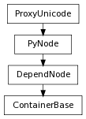

Return an array of the nodes included in this container.
| Return type: | PyNode list |
|---|
Derived from api method maya.OpenMaya.MFnContainerNode.getMembers
Return the parent container, if there is one. Otherwise return an empty MObject
| Return type: | PyNode |
|---|
Derived from api method maya.OpenMaya.MFnContainerNode.getParentContainer
Return a list of published names on the container. Depending on the arguments, either all published names or only unbound published names will be returned.
| Parameters : |
|
|---|---|
| Return type: | list list |
Derived from api method maya.OpenMaya.MFnContainerNode.getPublishedNames
Return a list of the published nodes of a given type. For any names that have assigned nodes, return the node at the corresponding array index. For any names that do not have assigned nodes, a NULL MObject will be at the corresponding array index.
| Parameters : |
|
|---|---|
| Return type: | (list list, PyNode list) |
Derived from api method maya.OpenMaya.MFnContainerNode.getPublishedNodes
Return two arrays: the first contains the plugs that have been published on this container. The second contains that published names for those plugs. There is a one-to-one correspondence between the plugs in the first array and the strings in the second.
| Return type: | (PyNode list, list list) |
|---|
Derived from api method maya.OpenMaya.MFnContainerNode.getPublishedPlugs
Return the root transform, if there is one. Otherwise return an empty MObject .
| Return type: | PyNode |
|---|
Derived from api method maya.OpenMaya.MFnContainerNode.getRootTransform
Return an array of the container nodes included in this container.
| Return type: | PyNode list |
|---|
Derived from api method maya.OpenMaya.MFnContainerNode.getSubcontainers